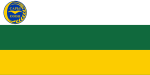

キルギスは7つの州 (oblast) と2つの特別市 (shaar) から成り立つ。州はさらに地方 (raion) に分かれる。地方長官は中央政府が任命する。aiyl okmotu と呼ばれる自治体は、最大で20程度の集落から構成されており、選挙で選ばれた村長のほか議会が設置されている。
| No. | 州旗 | 州名 | 州都 | 面積 | 人口 | 人口密度 |
|---|---|---|---|---|---|---|
| 1 | ビシュケク特別市 | クエッタ | 100 km² | 915,700 人 | 9,157 人/km² | |
| 2 | バトケン州 | バトケン | 17,000 km² | 469,700 人 | 25.2 人/km² | |
| 3 |  | チュイ州 | ビシュケク | 20,200 km² | 790,438 人 | 39.13 人/km² |
| 4 | ジャララバード州 | ジャララバード | 1,099,200 km² | 33,647 人 | 29.0 人/km² | |
| 5 | ナルン州 | ナルイ州 | 45,200 km² | 271,000 人 | 6 人/km² | |
| 6 | オシ州 | オシ | 29,200 km² | 1,299,500 人 | 44.5 人/km² | |
| 7 | タラス州 | タラス | 11,400 km² | 219,800 人 | 19 人/km² | |
| 8 | イシク・クル州 | カラコル | 43,100 km² | 463,900 人 | 11 人/km² | |
| 9 | オシ特別市 | 18 km² | 265,200 人 | 14,335人 人/km² |